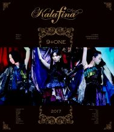
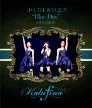
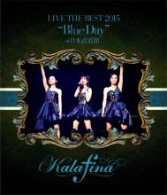
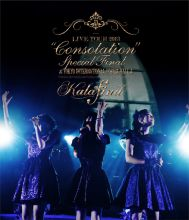
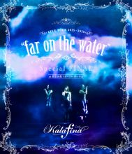
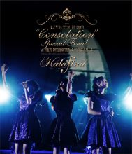
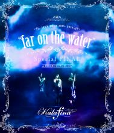

Blu-Rays and DVDs

 


 



Poll
Which is your favorite album from
Yuki Kajiura?
I have a dream
See-Saw
Early Best
Dream Field
melody
everything
Destination
Circus
Everlasting Songs
Seventh Heaven
Red Moon
After Eden
Consolation
Elemental
far on the water
Interviews
Chapter II: After Eden
Kalafina Interview
Thick sheets of musical scores with detailed written notes. In the ‘materials’ the three gathered for this interview we caught glimpses of grand ‘remnants of battle’ in the making of ‘After Eden.’ We heard about their newest emotion filled album.
– Firstly, let’s begin with your impressions on finishing your 3rd album After Eden.
Wakana: My honest feeling, rather than being one of relief was ‘Ah, now we have now choice but to take one step further’, a kind of feeling of standing taller. When one creates a new album, without fail one starts anticipating the coming live performances. In what way one should one sing in order to display a perfected stage in a way that can stand up to the CD version for example, it isn’t so much that you feel pressured, but more a resolve to try your hardest.
– What about you, Keiko-san?
Keiko: When I first heard it directly I thought ‘I’ll continue and listen to it once more.’ To be honest, I didn’t think that with ‘Red Moon’ (laughs). Of course I love the album and have listened to it over and over but because it’s somewhat like a collection saying ‘This is Kalafina’, once I heard it once I wanted to leave a little space between listens. However, After Eden, compared to Red Moon, has a lot more songs that are easy to listen to. It’s certainly not that the songs are more light-hearted, despite many of the songs having a message of a higher nature than our previous works… Because it’s an album where I want to listen and immerse myself in it over and over, the fact that I myself first felt that way made me very happy.
– It certainly gives that sort of feeling. The strength of the excitement of each song doesn’t change, rather, it increases, it’s easy to listen to. Then, as for you, Hikaru-san?
Hikaru: I too thought that compared to our previous albums, which had elements of classical and opera with an emphasis on operatic melodies, it has a lot of songs that are bright and positive. For me personally it was also an album in which I tried out a lot of different singing styles, each and every single recording was a challenge. Because albums have many songs on them the desire to have variation to keep it interesting also comes out. I feel as if there were a lot of recordings in which I sang while thinking ‘This song is fun’ this time around. I think the way in which I handle songs may have changed a little.
– We’ve talked a bit about how different this album is from your previous ones. What do you think, Wakana-san?
Wakana: For myself, I think that After Eden is a little more adult-like. There were many songs were I felt that Kalafina hadn’t really sang anything like it before. In many of the songs Kajiura-san writes, the first pronoun often used is ‘boku.’ I often feel like I am watching a neutral feeling existence that is not even human from high above. However in After Eden I had the impression of many songs being sung about women. Regrets, wishing and crying, wanting to chase after something or someone …. there were many songs that had portrayals of weakness and honesty. That aspect of it, I felt, was adult-like and real.
– Adult-like and real. What do you think of these keywords?
Keiko: I think the fact that the majority of the album had a live band sound is connected to that. Like when I was in the booth listening to the background music, I remember feeling the same tension as I would at a live. The rise of such feelings within us influenced our singing to sound more real. I think as we increasingly came to know the importance of our live activities since ‘Red Moon’ and the significance of the things that we gained from them, we slowly became able to express what we did at lives in recordings also.
– So in this way your recent activities here functioned as a plus?
Keiko: As expected, as the amount of lives we did increased so do I think that the three of us became more sensitive to the instruments as well. For example, the bass here feels good, let’s utilise the sound of the piano here. If we had not been able to experience that on many stages we probably would not have noticed such things. I think that no matter how much music Kajiura-san made with a live sound as the main element we probably would have sung without being able to accept that change.
Hikaru: What I felt was the same as Wakana, the point that there were a lot of lyrics that were singing of emotions. Rather than it being easier to express my feelings in an imagined world, there were many songs in which I felt it as something I had experienced in my life to date or that I might in the future and on that point, I think maybe we were able to bring that aspect to attention, while keeping close to the emotions of the listener. What I felt this time singing, rather than it being the sensation of flying into a world not yet experienced in reality, it felt like I was able to see a world that might exist in reality; I think that part was what was felt ‘real.’
– What kind of feelings did you have during recording?
Hikaru: I said at the beginning that I tried out lots of different styles of singing. The result of that was that there were no songs were I thought ‘I’m incapable of it (technically)’ and so that became a great source of confidence for me.
Wakana: For this album I was again taught many things by Kajiura-san. Things like when the song was put up ‘This song is for the sake of Kalafina’s step-up’ and ‘You must sing in a different voice than the ones you have been using up until now’, I took in a lot of messages. There were many things that troubled me and parts where I felt anxious regarding that. However each day of striving my hardest was very enriching, it felt kind of like I was going in everyday to say ‘How is that?!’ to Kajiura-san rather than making an album. That’s why after we finished recording the last song I felt lonely thinking ‘It’s already over.’ There are still many things I have to learn and it’s hard to find a way to say this, but because of this album I found that there were still many things I have to do. Finding that I still have a way to go conversely was actually a happy discovery for me though, so I’m looking forward to what will happen from now on for Kalafina and myself.
Keiko: I also had my own challenges. I had ideals like ‘I want to sing like this.’ It might have been because there were many songs with a live band sound, but I wanted to give a different feeling in the way I joined my harmonising. This time in order to place importance on the groove, I thought it would be a good idea to make my image expand to its utmost and allow the feeling of myself singing individually while purely listening to the melody to collide with the upper harmony. It’s not something you can do very often, it’s quite difficult. As a singer, finding and overcoming challenges every day made for a very enjoyable production.
– During recording do you do anything particular in order to maintain motivation?
Wakana: I lead a regulated lifestyle. Going straight home. Sleeping a lot. (laughs) I didn’t really see anyone. I didn’t want there to be any influence. During that period, it was only when I saw my family after a long time and had a meal with them that I was able to feel quite refreshed. I thought that being with people you can relax with every now and again is good for your body and soul.
– How about Keiko-san?
Keiko: I was quite closed off. I did not meet with anyone. At home I would listen to the songs that we would record the next day, and listen to the demo songs. I didn’t listen to anything else but music so when I wasn’t listening to them I would just be in silence.
– So it was kind of like you submerged yourself in the world of the album?
Keiko: It naturally became that way. It was the first time I had concentrated so hard during a recording.
Hikaru: I live together with my family so there isn’t often time when I can be alone. However I do have a small sound-proof booth in my apartment, so I holed up in there and grappled with the written music and things like that. Also, during recording I change my clothes every day to match the song we are recording, however this time around it was almost mysterious how easily I was able to decide what to wear without hesitation, every morning I had fun. (laughs) It always became quite messy in my room. There were clothes strewn all across the bed because of my one person fashion show. (laughs)
– Now then, I would like to hear your thoughts on ‘After Eden’ one song at a time. First of all, ‘Eden.’
Keiko: It has such brightness to it that I thought to myself: ‘Is this really Kalafina?’ In order to create one of Kalafina’s unique characteristic grooves a 6/8 tempo is used however ‘Eden’ uses a 6/4 tempo. Among its clear atmosphere it feels like one is sprinting. Yes, that’s it; ‘Eden’ feels like you’re sprinting. On top of that it feels pure. I think it was an appropriate song to start from.
Hikaru: I sang this song while imagining a scene of the morning sun rising. It has a feeling of wanting to go forward while believing in tomorrow. Though it’s not like you will be going alone, because someone is at your side you were able to make that big decision, and because of that you can move forward. It’s representative of a song about looking forward.
– Then, about the second song, ‘sandpiper.’ The atmosphere changes quite dramatically.
Wakana: When we recorded the demo song, it was the first song in a long while that Hikaru and I entered the booth together and sang. Usually whether it’s the final or demo version it’s not good practice to record at the same time with someone else. That’s why being able to feel Hikaru singing close by more so than usual didn’t feel like we were competing, rather it made it very easy to image ‘Well, I’ll sing it this way then.’ I sang while thinking of myself as the blowing wind questioning Hikaru’s tremendously sad yet occasionally forceful expressions. I talked with Keiko about how ‘This song feels parched.’ I think it’s because there are elements of a woman’s grief and ephemerality. I feel like the more you listen to it the more your image of it changes. I get a feeling like this person isn’t very strong.
– And then the third song. Magia is a well-known song however; please tell me your changed impressions on its inclusion in this album.
Hikaru: I think whether it be among Kalafina‘s songs or the songs on ‘After Eden’ it is the song where the feeling of having a ‘wish’ is the strongest. I felt while listening over the album that ‘This song has great power.’ It was a song we sang at many places because of ‘Mahou Shoujo Madoka Magica’, however every time we sing it I’m able to compare how I felt back then, it’s a song that I can sing even now with that influencing me. In what we were trying to bring across it’s a tremendously heavy song.
Wakana: ‘Magia’ is a song that we ourselves were able to feel in our skin that it was a hit, to the extent we heard it playing in convenience stores and the like. (laughs) It has such a strong impression that I thought that the title of the album would be ‘Magia.’ That’s why I think it was a good thing that it ended up being the third song. That Kalafina was able to sing a song like this as the third song on the album was quite broadminded so I was quite happy about that.
– Next is ‘Kugatsu.’ I felt that it had a strong story-like sound.
Hikaru: My image of ‘Kugatsu’ was that of a woman growing up. The character in the song feels like she is still maturing so I sang with the emotion of someone who still has some immaturity remaining within her heart.
Wakana: I actually got the opposite impression, that the song was quite adult-like. I felt that at last Kalafina had become able to sing songs like this. After the interlude ‘futari no tame ni yasashiku’ the flute begins as the song swells and as the coined words (TL note: ie Kajiura-go) are sung it feels as if one is being comforted. Thus that quiet build up is the main hook of the song. It’s like Kajiura-san expressed a non-existent autumn night through the music and the words.
Keiko: My impression of this song was that of a woman who has accepted everything smiling gently. The part all three of us had in common when interpreting this song was that we sung in a gentle way. The first part with Hikaru truly doesn’t have many notes, the words are gently sang together with the sound of the bell-like glockenspiel. The part where Wakana enters is a gentle ballad. However, because of the live band sound, along with it being a ballad, it is sung as if letting one’s emotions being carried along. Fundamentally it is a very gentle song.
– The 5th song, ‘in your eyes.’
Keiko: The first thing I thought when I saw the lyrics was that it really has atmosphere, Kajiura-san herself also said ‘Because it’s this album, I decided to add this song.’
Wakana: It has a feeling of a mysterious sultry night and even in the lyrics has lines like ‘I’m sorry for being abrupt, love isn’t that lenient.’ Even now I get surprised by the words ‘not lenient.’ However I felt that was how Kajiura-san expressed a bewitching love, the feelings of a woman pursuing a man. If that’s the case then I felt it was very spot on, the rhythm is quite cool too and has a very Middle-Eastern feeling.
Keiko: You’re right; the song has a fun rhythm. The guitar lines are interesting too, as well as the ride of the percussion. When we sing the lyrics in front of an audience at a live I want to sing it in a mischievous way.
– Let us continue to ‘destination unknown.’ It seems that this song together with the previous one is a golden combination on the album.
Hikaru: Because of the rock sound, my favourite guitar lines on the album are in this song. When one listens to the music it ends up feeling as if you’re pitching forward so it was a song where I as a singer had to sing in a calm and cool ‘falling backwards’ way in order to counteract that. In the last hook of the song, there is a part where I sing the main melody while Keiko sings the A melody and you don’t really know which one to listen to, I think that sort of feeling of collision felt quite fresh. One last thing was that in the second A-melody part ‘kirei na hikari ga hitotsu hoshii’ there is a moment where it becomes silent just after the ‘hitotsu’ part that wasn’t originally there when we recorded it. After the song was finished we listened to it and it had been added during the arrangement… everyone had goosebumps.
Keiko: Wakana was in an agony. (laughs)
Wakana: It was amazing. (laughs)
– Next is ‘neverending.’ It completely changes to a lamenting melody.
Keiko: It’s a song that Kajiura-san followed her instincts and wrote in just one night. When you listen to it you know straight away ‘Ah, this is Kajiura-san’s music.’ It feels the same as when I first heard ‘Hikaru no Senritsu’, it is not necessarily a bright song, all the more because it is about searching for hope, it feels painful. This song is the first and only song up until now where although I was harmonising I imitated Hikaru’s voice. Even if I had sung as always it would not have fit. I have often done recordings where I have had to change my voice but this was the first where I imitated someone so it was fun.
Hikaru: This is the song where I sang with the most affectation. When we were recording the demo I said to Kajiura-san ‘I’m singing with an affectation, is that alright….?’ It was a bit of challenge for me but I was very happy when she said ‘That’s fine.’ With its unique expressions and a melody that is a little nostalgic, it has the image of a slightly scary fairytale. I wanted to sing smoothly the feeling of a repeating image of singing in a place that never ends.
– Then, ‘Kotonoha.’ In this song there is also a feeling of nostalgia.
Hikaru: This was a song that came firmly into my heart. The difficulty of coming up with the right words is something I think that everyone definitely experiences at least once in their lives. The frustration of being unable to express your thoughts, because it was a song we sang about those sorts of feelings, it felt like it linked to my own life. Although it is a short song, I think it is the one song where I felt something very strongly.
Wakana: It was very hard during recording. If tears were to well up then I couldn’t sing so I had to sing while endeavouring to hold them back. It was one song with a lot of feeling packed into it. When the song was finished and I listened to it I felt that Kajiura-san must have wanted for it to be conveyed in this way. Lines like ‘I cried, wanting to remain pure white.’ Because it was the last song we recorded it left an excessively deep impression.
– ‘magnolia.’ On this album it is the most digital sounding song.
Keiko: I strongly felt ‘Ah this song sounds Kalafina-ish.’ It has the same image Kalafina had in the very beginning. Like you don’t know who is singing it, an artist with a lot of mystery. While getting on the cool sound lacking the feeling of flesh and blood which is characteristic of a song with a digital beat we sang at the top of our voices in an unconcerned way.
Hikaru: My advice from Kajiura-san for the main melody was to do it in a ‘Cool, sexy way’. That being the case, I had to sing in the image of a mature woman. Like she is cold, but that coldness is a good thing. She is very ‘S’, but you want to follow after her (laughs).
Wakana: I also felt that it had a sexy sound. She declares ‘My heart may not be dyed by your colour though.’ This person is cool. Again, it’s completely different to ‘Kotonoha.’
– Next is ‘Kagayaku sora no shijima ni wa.’
Hikaru: It is a sad funereal song, however if you listen to it on the album, because it comes right after ‘magnolia’ one is able to feel something like the warmth of human blood flowing. The melody and lyrics that feel like they can constrict your chest have a very strong impression. I really love Keiko’s parts in this song. So much so that I end up listening to those parts rather than the main melody. I think that everyone definitely has songs where they really like the harmony, but for me an example would be this song.
Wakana: Particularly in the second half, Hikaru has a lot of emotional parts. I think that those parts feel very human. Even now at lives when I meet Hikaru’s gaze during it I feel as if I’m connecting to her. The parts where Keiko does the harmony are also good. It’s the part with the thrilling chorusing of the three of us. I like it a lot.
– We’ve finally reached the last stage. The 11th song ‘Mune no yukue.’
Keiko: When I first heard the demo I was very moved so while recording I felt pressured on having to sing the beginning solo. However I was probably too self-conscious. While recording Kajiura-san said ‘We don’t do this kind of thing too often though’ before saying, ‘Sing it once without thinking, like you’re on a rooftop, it’s alright if it’s only to your own satisfaction, I want to hear that you’ve sung with a lot of emotion.’ And when I tried doing so in practice she asked ‘Which one comes out more strongly, the recording just now or the one before?’ In the end when we talked it over we chose the latter, which placed emphasis on the feeling of a refreshing wind blowing by. It was a song that became a good lesson for me. It’s one song that will remain in my memory.
– And now ‘snow falling.’ It’s a song that has a particularly strong impression when performed live.
Wakana: Because the live arrangement is acapella as well, it became a little different from the image of the sound source ‘snow falling.’ Its original gentle image is filled with more strength because of way we do things at lives. Because the beginning of this ‘snow falling’ is a scene of heavily falling snow, it starts out with a voice that reverberates though it is quiet, so it has a warm rather than cold image. It is also a cover song for the movie version of Kara no Kyoukai’s last chapter so although I could not help but think of the films, I feel that it beautifully expresses the frustration of two people who must be together but can’t no matter what.
Hikaru: In the time that it slowly flows I think it’s a song where one reflects on happiness from one’s heart. You can listen to it with a smile, but tears spontaneously fall. It feels like tears of happiness.
– And then the last song on the album ‘symphonia.’
Keiko: It is the song that serves as the conclusion not only for our ‘Magia’ tour and the ending of this album but Rekishi Hiwa Historia as well. ‘Eden’ is a little about the feelings you have towards your pure dreams, so for an album that starts from an attitude of looking to what’s ahead, ending with ‘symphonia’ and feeling like we were able to return to that starting point of wanting to convey something through the music was fitting. What the three of us are able to do is convey music. Up until now we have sang many songs and we also had a lot of challenges with this album, however when I look back on the year and a half since ‘Red Moon’, as I thought, we were able to reach the space of happiness that is ‘music’ because of the importance of our live activities and the atmosphere of meeting our fans in person. On hearing this song last I want people to think that Kalafina’s music will not end, when the three of us heard this album once more, because it is a collection of the present of the three of us, it became the conclusion where we were able to again feel that we wanted to continue being able to convey music so it was fitting to be the final song, it was a good song.
– With the last trailing note it truly is a fitting conclusion. I end up wanting to return to Eden from there.
Keiko: It is an album filled with the capabilities of the present Kalafina.
Comments Off on Kalafina Record – Kalafina Interview
Live Concerts Schedule
Kalafina Acoustic Tour 2017 + ONE with Strings
December 13, 2017
Nagoya, Japan
@ Aichi Prefectural Art Theater
December 14, 2017
Fukuoka, Japan
Fukuoka Symphony Hall
Kalafina with Strings Christmas LIVE 2017
December 19, 2017
Osaka, Japan
The Symphony Hall
December 20, 2017
Osaka, Japan
The Symphony Hall
December 22, 2017
Tokyo, Japan
Bunkamura Orchard Hall
December 23, 2017
Tokyo, Japan
Bunkamura Orchard Hall
Kalafina 10th Anniversary LIVE 2018
January 23, 2018
Tokyo, Japan
Nippon Budokan